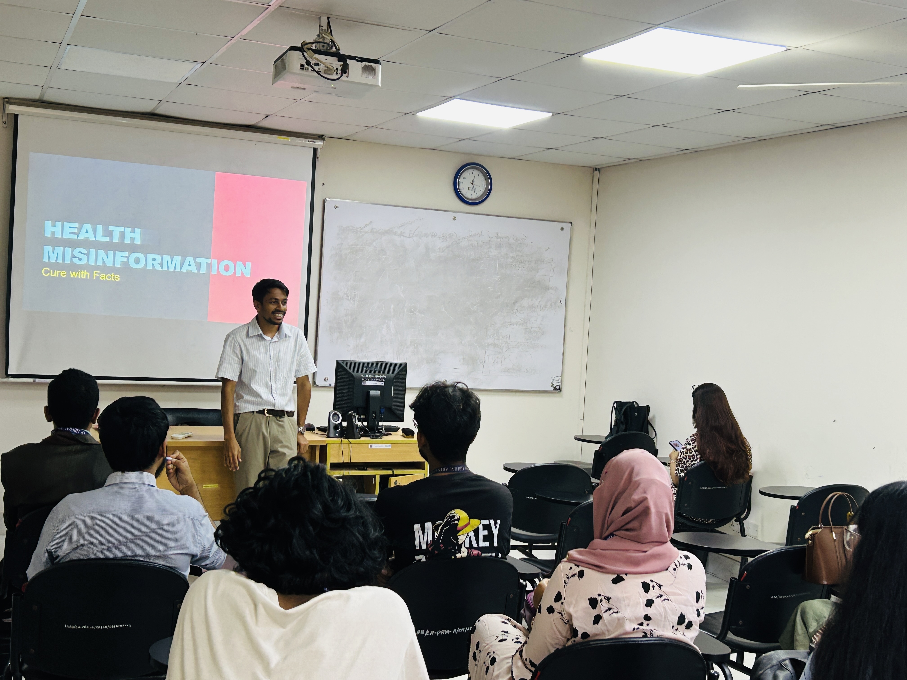

Interventions · community-facing work
Training, workshops & public-interest teaching
This is where I showcase the community-facing side of my work: workshops, training sessions, media-literacy interventions, and forms of social contribution built around verification, journalism, and public knowledge.
I treat interventions as applied public work. Some sessions are for students, some for journalists, some for editors, and some for mixed communities trying to navigate misinformation more responsibly. The goal is always the same: clearer methods, stronger judgment, and more confidence in how truth gets verified.
Featured intervention
Cure with Facts
Workshop facilitator · Digital Citizenship and Misinformation Resilience Program · ULAB × British Council
In March and April 2025, I led sessions on platform misinformation and source verification for undergraduate students. The intervention was designed to help participants recognize how false or misleading content circulates online, and how stronger verification habits can make them more resilient readers and sharers.


Browse interventions
Intervention details
Five years out
I'm wary of vision statements. Here is the version I can be held to: four problems I want to be useful on by 2031, written so the future me has something to recognise.
01
Make the algorithm-versus-public-knowledge debate land in South Asia.
Most of the global writing on platform power is American. I want to do my small bit toward a Bangladeshi vocabulary for it — through the journalism, the research, and the slow institutional work it takes to put a question into the room.
02
Build a working method-school for OSINT in Bangla.
Most of the verification training in our newsrooms is in English, ported from American or European materials. The translation gap matters, and I'd like to close it.
03
Run a long-form research project to publishable standard.
The algorithmic-feeds project is the start. I want to come out of the next five years with at least one peer-reviewed publication and one published book-length non-fiction work.
04
Keep the workshops going.
The High-Performance Learning workshops are the quietest of these goals and possibly the most important. Two cohorts a year, every year, however small.
Need a speaker, trainer, or workshop facilitator?
Available for newsroom verification sessions, media-literacy workshops, academic modules, and public-interest communication interventions.
invite me to speak